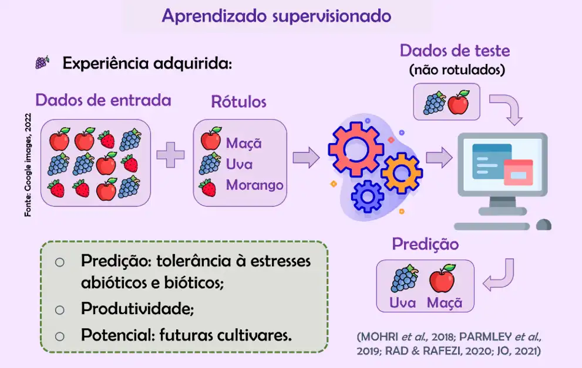
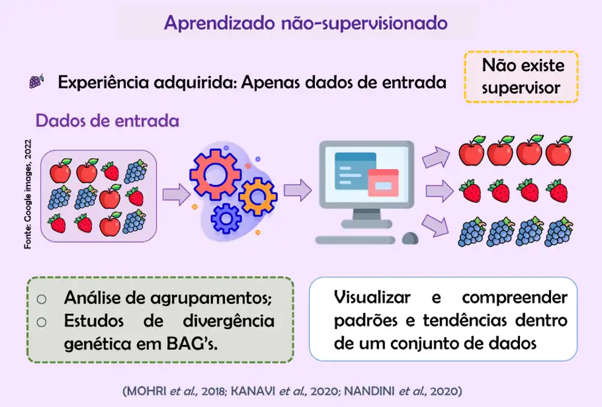

Aprendizado
Como a IA Aprende e Toma Decisões
A Inteligência Artificial aprende e toma decisões usando Machine Learning (Aprendizado de Máquina), uma técnica que permite que computadores identifiquem padrões em dados e ajustem seu comportamento sem serem programados manualmente para cada tarefa.
Aprendizado Supervisionado
- A IA aprende a partir de exemplos rotulados, ou seja, dados já identificados com a resposta correta.
- Exemplo: Um sistema aprende a reconhecer de frutas a partir de milhares de imagens rotuladas como "Uva", "Maça" ou "Morango".
Diagrama simples:
Aprendizado Supervisionado
- A IA identifica padrões ou grupos nos dados sem respostas pré-definidas.
- Agrupar fruras com base no formato e cor, sem saber previamente quais grupos existem.
Diagrama simples:
Aprendizado por Reforço
- A IA aprende experimentando ações e recebendo recompensas ou punições, ajustando seu comportamento para maximizar o resultado.
- Um robô aprende a andar evitando obstáculos e recebendo pontos quando se movimenta corretamente.